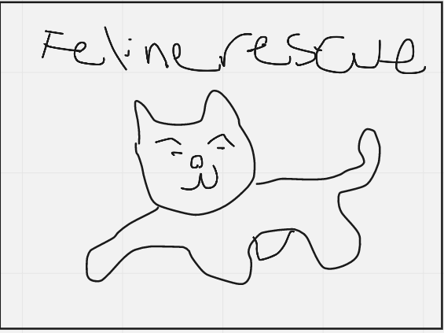

Feline Rescue
My team and I worked on redesigning this website as many we interviewed complained of the archaic looking design, with consistent contact with the owners, as well as user testing, we were able to create a much more modern and streamlined version of the website.
Tools used: Figma, Miro, Zoom, Trello, Material.io, Invision
Introduction
Project Description:For this project, my team and I were tasked to choose a local nonprofit and redesign their website as a way to practice our design skills. We chose Feline Rescue (a cat shelter in St. Paul, MN) as our nonprofit, and we executed the UX/UI design process to create a mockup of a redesigned responsive website for Feline Rescue. This design process began with user research, continued with defining and ideating on a solution, and culminated in a solution by testing and iterating on a final hi-fidelity web design prototype.
The Problem:With approximately 6.5 million animals in shelters, having an easy way for potential adopters to adopt a new pet is extremely important. Our team chose to redesign the Feline Rescue website in order to create a more rewarding experience for users.
The Solution:Further developing the website to be more accessible, easier to navigate, and provide more information to our users so they feel confident in their decisions to adopt from Feline Rescue.
Original Website
Research:We conducted our user research using a Google survey, five user interviews, and five usability tests of the current Feline Rescue website. We found that many users wanted a lot of information on the cats that they would potentially adopt, needed a trustworthy shelter to adopt from, and wished that they could easily search for cats that matched their preferences. We came to the conclusion that by adding more in-depth descriptions, adding an overview of the shelter’s values on the website home page, and adding more filtering options, our users could more easily find the perfect cat for their home.
User Testing

User Persona:We created a proto-persona to help frame our research. Using this and our research results, we conducted analysis on our user needs by making an affinity diagram, empathy map, and ultimately a user persona (a conglomeration of all of our user interview and testing data). Our user persona is Susan Been, an accounts manager that already owns a cat. She wants a new companion for herself and for her current cat. With COVID limitations, online research is the safest option for her, so a website that can properly inform her on potential adoptees is important for her.
User Journey and Storyboard:
User Flow:Many users particularly desired better descriptions for the cats on the website. After creating a storyboard for a typical user experience on the Feline Rescue website, we decided to map out the steps that users would take when adopting and making donations. For adoption, we focused on providing more in depth bios, including the age, the breed, and a better filtering system including the cat’s personality and how it gets along with other animals. As our organization is a non-profit, donations were also an important aspect, so we worked on streamlining the process as much as possible.

Sketches and Wireframes:Now equipped with a user flow and site map, we created wireframes for both the mobile and desktop layouts. We conducted user tests to help identify any initial issues in our lo-fidelity prototypes. Users had issues with the hamburger menu, specifically finding the donate button in it, and our menu was misaligned. The checkout process was also a pain point our users had, so we made sure to focus on making it a better experience. And of course, users always wanted more cat pictures.
Lo-Fidelity Mobile Prototype.
Lo-Fi Desktop Wireframe.
Usability Testing: With additional feedback, we determined that the navbar at the top was not successful in showing what tab the user was hovering over, and that the drop down being a slightly more transparent shade of purple could be an accessibility issue and blended too much into the background.
After mid-fidelity testing, we learned that users would like more interactions on the site, and also had trouble navigating to the Donate page through the Get Involved tab. Therefore, a Donate option was added to the top navigation as well.
During Hi-Fidelity A/B testing, our main goals were to determine which homepage layout was easier and more appealing for users, and which filtering layout they preferred when searching for individual cats on the adoption page.
Version A of our high-fidelity desktop prototype.
Final Prototype:
Final Desktop Prototype.
Summary:
Some of our key takeaways included:
- By redesigning an existing site, we had some values and design choices that were important to keep in the redesign.
- User testings are important even for high-fidelity mockups, as there is always room for improvement.
- Finding the right balance of color usage can be challenging.